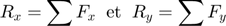

Problème 2/25, Meriam p. 37

Contents
Démarche scalaire

Construire le parallélograme et utiliser les relations trigonométriques.
clear; close all; clc; mF1 = 700; mF2 = 400; mR = 1000; % lb (Normes)

Les trois côtés du triangle sont connus et aucun angle n'est connu. Appliquer la loi des cosinus.
mF2^2 = mF1^2 + mR^2 - 2*mF1*mR*cosd(bêta)
beta = acosd( (mF1^2 + mR^2 - mF2^2)/(2*mF1*mR) );
fprintf('Angle bêta = %.2f°\n',beta);
Angle bêta = 18.19°
Les trois côtés du triangle sont connus de même qu'un angle. Appliquer la loi des sinus.
sind(alpha)/mF1 = sind(bêta)/mF2
alpha = asind(mF1*sind(beta)/mF2);
theta = alpha + beta;
fprintf('Angle thêta = %.1f°\n',theta);
Angle thêta = 51.3°
Vérification par la démarche vectorielle
Vecteur = Norme * vecteur unitaire
F1 = mF1*[-1,0]; % selon la convention de atan2. F2 = mF2*[cosd(180-theta), sind(180-theta)]; R = F1 + F2; fprintf('F1 = %+5.0fi %+5.0fj lb\n',F1); fprintf('F2 = %+5.0fi %+5.0fj lb\n',F2); fprintf(' R = %+5.0fi %+5.0fj lb\n',R); fprintf('Norme de R = %0.f lb\n',norm(R));
F1 = -700i +0j lb F2 = -250i +312j lb R = -950i +312j lb Norme de R = 1000 lb